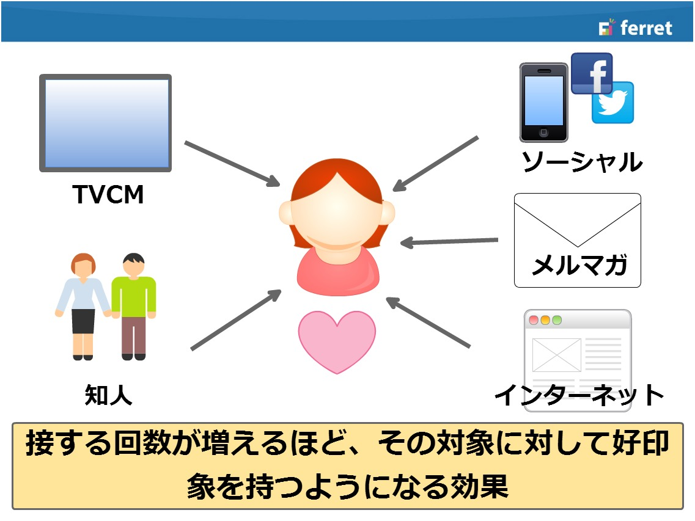
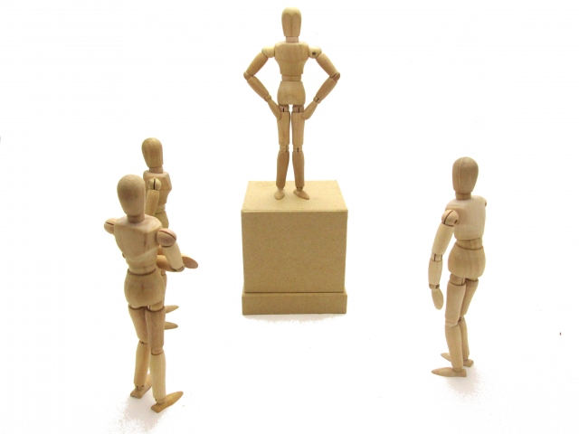

date：
2022-04-06
Webマーケティングに応用する心理学
早速ですが皆さんは「心理学」というワードから何を想像するでしょうか？
心の移り変わり、大学、専門知識、小難しい、はたまた詐欺、胡散臭いetc...多くの方が自らの生活とは縁遠い存在と感じているかもしれません。
しかし心理学は思った以上に我々の身近に根付いていて、実生活の場から商業の場まで幅広く活用されています。
そこで今回、HTMLやCSS、JavaScriptといった我々が学んできた技術から少し視点を変えて、Webサイト制作のためのマーケティングに応用できる心理学にフォーカスしてご紹介したいと思います。
date：
2022-04-06
バンドワゴン効果
【バンドワゴン効果】
ある現象や選択肢が大衆からの支持を受けているという情報を受け取ると、それに対する好感度や支持が強まる現象を指す心理学用語。パレードの先頭の楽隊車(バンドワゴン)に追従する様子が語源。流行に便乗したいという行動原理を表す言葉。
「若者の間で話題沸騰」「多くの著名人が愛用」「店頭から消えた(品切れ続出)」などのキャッチコピーも、流行に流されやすい人間の性質を利用したマーケティング手法である。
後述する「権威への服従原理(感性の権威)」やフォールス・コンセンサス効果とも密接な関係がある。
【カリギュラ効果。別名：心理的リアクタンス】
「押すなよ！絶対押すなよ！」で知られる、禁止されればされるほどやりたくなるアレ。1980年の映画『カリギュラ』の内容があまりに過激すぎたため一部地域で公開禁止にしたところ、かえって世間の目を惹いたことからこの名称で呼ばれることになった。人が自由を制限（剥奪・侵害）された際に、それに抗おうとする性質の事を心理的リアクタンスという。
「本当に痩せたい人以外は試さないでください」「夜中にひとりで見ないで下さい」「本気で学びたい人以外にはおススメしません」といった文言で〇〇したい人の欲求を刺激することで利用や購入を促進できる。ただし、マーケティングで使用する際はなぜ制限・禁止したのかを明記しないとモヤモヤが残るので、予めそこをフォローしておく必要がある。

【ザイオンス効果。別名：単純接触効果】
対象に何度も繰り返し接触することによって好感度が上がる心理現象。その対象は人物や物、思想等多岐にわたり、五感を刺激する全ての事柄に当てはまる。
何度も流れるCMや行きつけの店の店員さんに親しみを覚えるなどが身近な例。頻繁に会う、マメに連絡をとるなどの恋愛ハウツーでも利用されている。
「ローソンの看板の特徴」や、「赤背景に黄色のMはどこのメーカー？」と訊かれて多くの人が即答できるのはこのザイオンス効果が働いているから。
ロゴマークやマスコットキャラクターをサイト内に何度も出現させる事によって認知と好感度を上げる、
同じ色を何度も視界に入れることによってイメージカラーを刷り込むなどの使い方ができる。
date：
2022-04-06
権威への服従原理

【権威への服従原理 別名：ミルグラム効果】
物事の実際の価値に関わらず、権威(肩書や地位)のある人の意見に左右されてしまう心理。
権威には、
1.理性の権威(大学教授、医者、弁護士などの専門家)
2.感性の権威(有名人、芸能人、インフルエンサー)
の2種類があり、1963年にアメリカのイェール大学のスタンリー・ミルグラムが理性の権威の実証実験を行った。アイヒマンテストとも呼ばれている。
「〇〇大学名誉教授」、
「〇〇金賞受賞」や
「カリスマ〇〇が厳選して作った～」
など、数え上げれば枚挙に暇がなく、目にしない日はないだろうというくらい巷にあふれかえっている。非常に有用な反面、過剰な演出はステルスマーケティングや捏造と捉えられて逆効果を生むので真偽を証明できる文句にする必要がある。
前述した4つ以外にも、
【バーナム効果】
多数に該当することでもさも自分だけが当てはまっているかのように感じること。
血液型占いや星座占いなど。
【一貫性の法則】
主義主張、態度、発言などに一貫性を求める習性。
一貫した主張に信頼を見出したり、自らの選択の負担を軽減することが出来る。
【フォールス・コンセンサス効果】
偽の合意効果。自分の主張や行動が常にマジョリティかつ正常であると思い込む認知バイアス。
マジョリティに属する安心感を、周囲との同調と勘違い(偽の合意)することからこの名前がついた。
などがあり、心理学のテクニックは昨今の企画や営業・マーケティング分野には欠かせないものとなっています。HTMLやCSS、JavaScriptといった基幹技術を学習する合間に、息抜きがてら心理学なども学んでみてはいかがでしょうか？